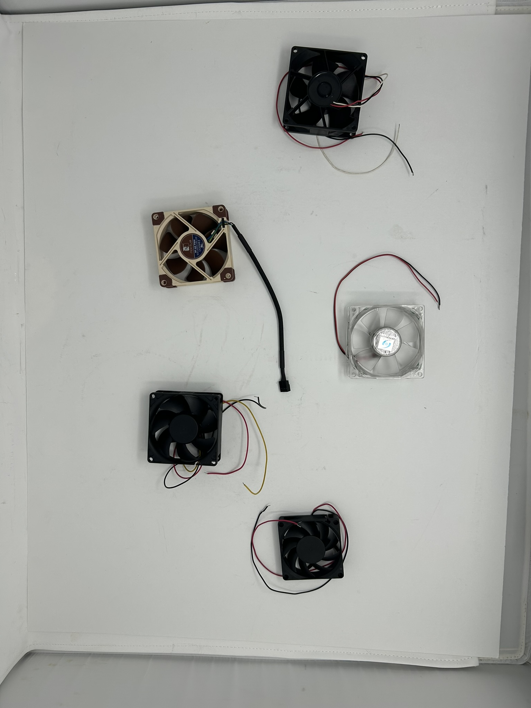
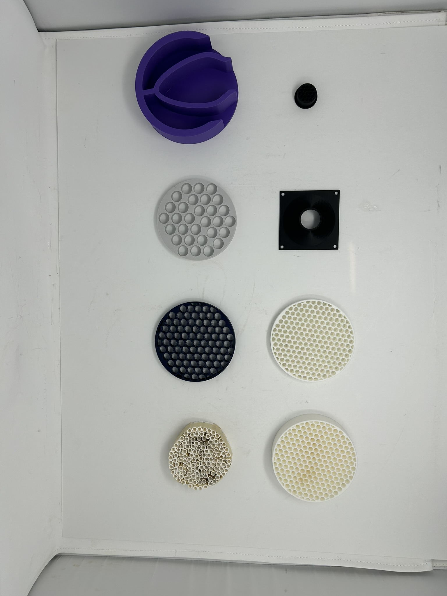
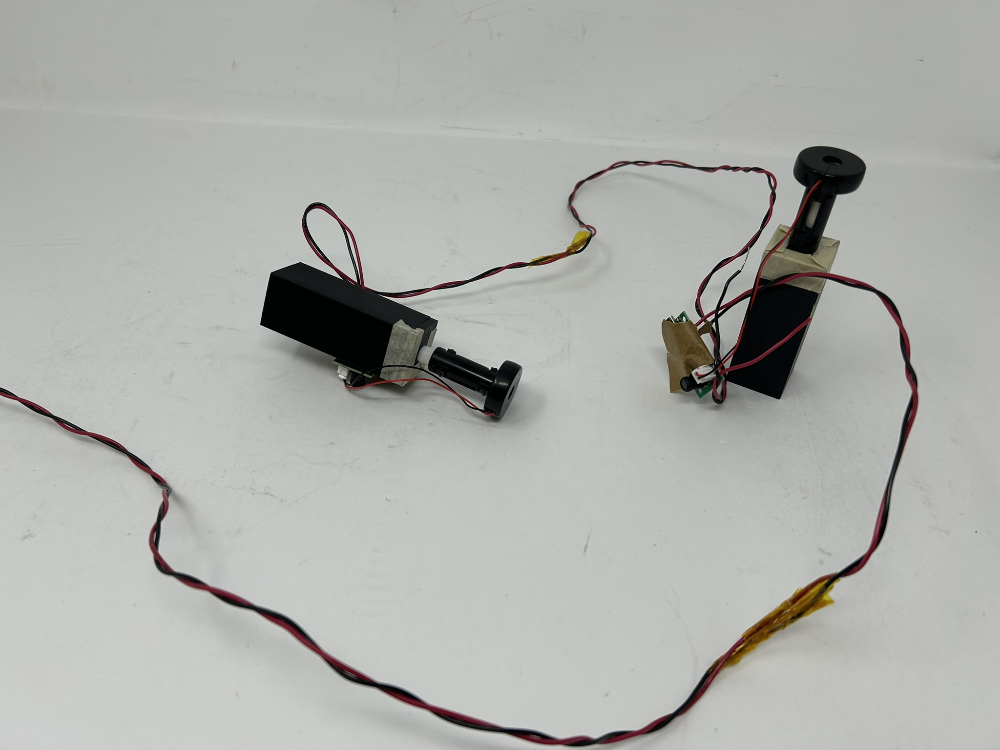

Jack Wei (Olin '28) and I built a small wind tunnel for a teach-in project. We wanted to create something that could help students see how air flows around objects.
The wind tunnel has a contraction section to smooth out the airflow and a test section where we can add mist to visualize the air patterns.
We used it to show students basic aerodynamic concepts by testing different objects and watching how the air moved around them.
Design
We tried to make the wind tunnel work well for teaching. We focused on getting smooth airflow and making sure students could actually see what was happening.
Most of our effort went into making the flow visualization work so students could see the air patterns around different objects.



Testing
We tested different objects to see how the air flowed around them. We tried a chip and a cow-shaped object to show students how different shapes affect airflow.
Students could watch the mist move around the objects in real-time, which helped them understand what was happening.
Documentation
We wrote up our process and what we learned from building and testing the wind tunnel.